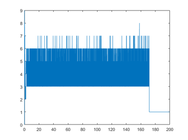

DEMOUTILITY Utility routines
Contents
- Gaussian elemination using naive interval arithmetic
- Gaussian elemination using affine interval arithmetic
- Gaussian elemination using gradients
- Gaussian elemination using hessians
- Gaussian elemination using k-bit arithmetic
- Random integers
- Even/odd
- Ill-conditioned matrices
- Prove of regularity of matrix with arbitrary condition number
- Random orthogonal matrices
- Relative errors
- Distance in bits and the accuracy of inclusion functions
- The bit pattern
- Intelligent help
- Checking exponential many possibilities
- Traversing all vertices of an interval matrix
- Enjoy INTLAB
Gaussian elemination using naive interval arithmetic
The generic routine solvewpp (Solve linear system With Partial Pivoting) works for a number of data types. It is based on Gaussian elimination with subsequent forward and backward substitution using corresponding routines luwpp, forward and backward.
The first example is using ordinary interval arithmetic. The entries of the matrix are afflicted with a relative error of 1e-10.
format long n = 5; a = randn(n).*midrad(1,1e-10); b = a*ones(n,1); format long xint = solvewpp(a,b)
intval xint = 1.00000000______ 1.00000000______ 1.00000000______ 1.00000000______ 1.00000000______
Gaussian elemination using affine interval arithmetic
Next we check whether the result is more narrow using affine arithmetic.
xaff = solvewpp(affari(a),b) [ rad(xint) rad(xaff) ]
affari xaff = 1.00000000______ 1.000000000_____ 1.00000000______ 1.000000000_____ 1.00000000______ ans = 1.0e-08 * 0.585206094694257 0.145810186147344 0.439913949712434 0.084084428308984 0.716123293997839 0.213091633227691 0.295573088227030 0.049863879691969 0.377535780415883 0.216613049719427
Gaussian elemination using gradients
We may solve the linear system with gradients as well:
xgra = solvewpp(gradientinit(a),b); xgra.x
intval ans = 1.00000000______ 1.00000000______ 1.00000000______ 1.00000000______ 1.00000000______
The data can be used to analyze the sensitivity of individual solution components with respect to individual matrix components. Suppose we want to know how the 3rd solution component depends on the upper left matrix entry a(1,1). The answer is
sens = xgra(3).dx(1)
intval sens = -0.9491665_______
This can be verified by direct computation using the midoint equation:
xs = a.mid\b.mid; e = 1e-10; aa = a.mid; aa(1,1) = aa(1,1)+e; xss = aa\b.mid; sens_ = ( xss(3)-xs(3) ) / e
sens_ = -0.949164080665810
Gaussian elemination using hessians
The linear system can be solved with hessians as well, so that information on all partial second derivatives are available. We only display the second derivative of the 3rd solution components with respect to the upper left matrix element a(1,1).
format short
xhes = solvewpp(hessianinit(a),b);
struct(xhes)
sens_hx = xhes(3).hx(1)
ans =
struct with fields:
x: [5×1 intval]
dx: [25×5 intval]
hx: [625×5 intval]
intval sens_hx =
(1,1) 1.2196
Gaussian elemination using k-bit arithmetic
INTLAB's fl-package uses k-bit IEEE 754 binary arithmetic. After initialization, in this example to 22 bits and exponent range -99 ... 100, Gaussian elimination is performed in this precision.
flinit(22,100)
flinit('DisplayDouble')
xflk = solvewpp(fl(a),b)
ans =
'Initialization of fl-format to 22 mantissa bits incl. impl. 1 and exponent range -99 .. 100 for normalized fl-numbers'
===> Display fl-variables as doubles
fl-type intval xflk =
1.0000
1.0000
1.0000
1.0000
1.0000
Random integers
Sometimes random integers are needed. Here is how to generate an m x n matrix of integers in the range [1 ... k] or [ -k ... k] .
m = 2; n = 7; k = 10; ipos = randint(k,m,n) igen = randint(-k,m,n)
ipos =
5 2 10 6 3 5 9
8 6 5 1 5 3 5
igen =
9 -5 3 -9 -1 -4 0
2 -2 -5 -2 8 -4 -10
Even/odd
Sometimes it may be useful to check the parity of an integer. As the name suggests, odd(n) is 1 for odd n. It may be applied to a vector as well.
N = randint(-10,1,5) Nodd = odd(N) Neven = even(N) Nodd | Neven
N = -10 4 -5 5 1 Nodd = 1×5 logical array 0 0 1 1 1 Neven = 1×5 logical array 1 1 0 0 0 ans = 1×5 logical array 1 1 1 1 1
Ill-conditioned matrices
The routine randmat generates extremely ill-conditioned matrices.
n = 50; cnd = 1e25; A = randmat(n,cnd); c = cond(A)
c = 8.9123e+17
Of course, the Matlab routine cond cannot approximate the true condition number of about cnd=1e25. The true condition number can be computed by INTLAB's especially designed inclusion algorithm for extreme condition numbers (up to about 1e30).
C = cond(intval(A),'illco')
intval C =
1.0e+023 *
1.0808
Note that C is an inclusion of the true 2-norm condition number.
Prove of regularity of matrix with arbitrary condition number
Based on number theory and mod(p) calculations it is possible to verify the regularity of arbitrarily ill-conditioned matrices in short computing time. If, by chance, the test should not work, a second parameter specifying a kind of probability is possible.
An example with extreme condition number of about 1e100 is as follows.
n = 200; cnd = 1e100; A = randmat(n,cnd); tic reg = isregular(A) T = toc
reg =
1
T =
0.2697
Note that the proof of regularity is rigorous. As is well-known, a proof of singularity in the same manner is very difficult.
Random orthogonal matrices
One way to generate matrices with specified singular values uses random orthogonal matrices.
n = 100; Q = randorth(n); norm(Q'*Q-eye(n),inf)
ans = 1.9093e-14
Relative errors
Displaying relative errors has well-known drawbacks. First, there is the problem of numbers near zero: For x=1e-20, is x+1e-25 nearby? Second, the relative error depends on how close a number is to the next power of 2, and whether it is slightly smaller or larger.
The predecessor and successor of 1 and the relative error to 1 is computed by
succ1 = succ(1) pred1 = pred(1) relsucc = relerr(1,succ1) relpred = relerr(1,pred1)
succ1 =
1.0000
pred1 =
1.0000
relsucc =
2.2204e-16
relpred =
1.1102e-16
Distance in bits and the accuracy of inclusion functions
For very narrow intervals it might sometimes be simpler to use the distance in bits:
distsucc = distbits(1,succ1) distpred = distbits(1,pred1)
distsucc =
1
distpred =
-1
For performance reasons the maximum distance in bits is restricted to 100. The function distbits can be used to track the accuracy of computed inclusions:
x = linspace(0,200,1e6); Y = gamma(intval(x)); close, plot(x,distbits(Y))
The bit pattern
Also the bit pattern is sometimes useful:
getbits([pred1 1 succ1])
ans =
3×63 char array
' +1.1111111111111111111111111111111111111111111111111111 * 2^-1'
' +1.0000000000000000000000000000000000000000000000000000 * 2^0 '
' +1.0000000000000000000000000000000000000000000000000001 * 2^0 '
The function applies to intervals as well. It can be used to verify that the bounds are indeed as close as possible:
Pi = intval('pi')
getbits(Pi)
distbits(Pi)
intval Pi =
3.1415
ans =
4×62 char array
'infimum '
' +1.1001001000011111101101010100010001000010110100011000 * 2^1'
'supremum '
' +1.1001001000011111101101010100010001000010110100011001 * 2^1'
ans =
1
Displaying bits applies to single precision numbers or the INTLAB fl-toolbox as well:
getbits(single(pi)) flinit(7,50); getbits(fl(5)) getbits(fl(infsup(11,13)))
ans =
' +1.10010010000111111011011 * 2^1'
ans =
' +1.010000 * 2^2'
ans =
4×16 char array
'infimum '
' +1.011000 * 2^3'
'supremum '
' +1.101000 * 2^3'
Intelligent help
Sometimes it is not clear how to spell a name and/or we know only parts of a function name, and even that is uncertain. In that case sometimes helpp, an intelligent help function, may be useful. After initialization by just calling "helpp" the following may be obtained:
helpp tschebischeff
ans =
4×76 char array
'level 6 C:\INTLAB VERSIONS\INTLAB\intval\checkrounding.m '
'level 6 C:\INTLAB VERSIONS\INTLAB\utility\Fletcher.m '
'level 9 C:\INTLAB VERSIONS\INTLAB\polynom\chebyshev.m '
'level 9 C:\INTLAB VERSIONS\INTLAB\polynom\chebyshev2.m '
The answer comes with certain levels representing some kind of distance. Sometimes even gross misspelling still retrieves the correct name. Needless to say that it works the better the longer the string to look for.
Checking exponential many possibilities
Given an interval matrix A it is known to be an NP-hard problem to verify non-singularity. The best criterion known still needs 2^n steps for a given n x n matrix. The result is as follows:
Theorem (Rohn). A given interval matrix mA +/- r*E for E denoting the matrix of all 1's, is non-singular if and only if r < 1/sum(abs(inv(A)*x)) for all vectors x with components +/-1 .
The maximum quantity r is the so-called radius of non-singularity. Compared to checking all vertices the theorem reduces the number of determinants from 2^(n^2) to 2^n.
The function bin2vec is useful to generate all signature matrices. The call v = bin2vec(i,n) generates the vector of the n least significant bits of i.
n = 4; A = hadamard(n) Ainv = inv(A); R = 0; for i=1:2^n x = (2*bin2vec(i,n)-1)'; r = sum(abs( Ainv * x )); if r>R, R=r; end end singRad = 1/R
A =
1 1 1 1
1 -1 1 -1
1 1 -1 -1
1 -1 -1 1
singRad =
0.5000
Traversing all vertices of an interval matrix
The function bin2vec can also be used to visit all vertices of an interval matrix. These are, however, 2^(n^2) vertices. With the method before we checked that the radius of non-singularity of the 8x8 Hadamard matrix is 0.5. Thus A=midrad(hadamard,0.499) must be non-singular. This is checked as follows.
tic n = 4; A = hadamard(n); s = sign(det(A)); for i=1:2^(n^2) D = det( A + 0.499*reshape( 2*bin2vec(i,n^2)-1 , n,n ) ); if D*s<0 disp('The interval matrix is singular') break end end if D*s>0 disp('The interval matrix is non-singular') end T = toc
The interval matrix is non-singular
T =
0.5929
The function v = base2vec(i,b,n) does the same for base b.
Enjoy INTLAB
INTLAB was designed and written by S.M. Rump, head of the Institute for Reliable Computing, Hamburg University of Technology. Suggestions are always welcome to rump (at) tuhh.de